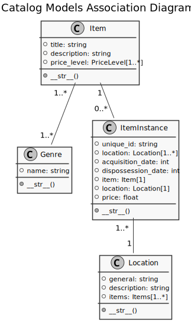

Developer Notes¶
Mozilla Tutorial Part 2¶
Overview¶
Create a conda Environment¶
Create an environment for the project.
Tell conda to specifically use python version 3.8, because 3.9 is not yet
supported by PostgreSQL, the database that will be used.
(base) [20:49:43 kendall@ArchLinux django]$ conda create -y --name kjn python=3.8
Collecting package metadata (current_repodata.json): done
Solving environment: done
==> WARNING: A newer version of conda exists. <==
current version: 4.8.5
latest version: 4.9.2
Please update conda by running
$ conda update -n base -c defaults conda
## Package Plan ##
environment location: /home/kendall/miniconda3/envs/kjn
added / updated specs:
- python=3.8
The following packages will be downloaded:
package | build
---------------------------|-----------------
certifi-2020.11.8 | py38h06a4308_0 147 KB
pip-20.2.4 | py38h06a4308_0 1.8 MB
setuptools-50.3.1 | py38h06a4308_1 714 KB
------------------------------------------------------------
Total: 2.6 MB
The following NEW packages will be INSTALLED:
_libgcc_mutex pkgs/main/linux-64::_libgcc_mutex-0.1-main
ca-certificates pkgs/main/linux-64::ca-certificates-2020.10.14-0
certifi pkgs/main/linux-64::certifi-2020.11.8-py38h06a4308_0
ld_impl_linux-64 pkgs/main/linux-64::ld_impl_linux-64-2.33.1-h53a641e_7
libedit pkgs/main/linux-64::libedit-3.1.20191231-h14c3975_1
libffi pkgs/main/linux-64::libffi-3.3-he6710b0_2
libgcc-ng pkgs/main/linux-64::libgcc-ng-9.1.0-hdf63c60_0
libstdcxx-ng pkgs/main/linux-64::libstdcxx-ng-9.1.0-hdf63c60_0
ncurses pkgs/main/linux-64::ncurses-6.2-he6710b0_1
openssl pkgs/main/linux-64::openssl-1.1.1h-h7b6447c_0
pip pkgs/main/linux-64::pip-20.2.4-py38h06a4308_0
python pkgs/main/linux-64::python-3.8.5-h7579374_1
readline pkgs/main/linux-64::readline-8.0-h7b6447c_0
setuptools pkgs/main/linux-64::setuptools-50.3.1-py38h06a4308_1
sqlite pkgs/main/linux-64::sqlite-3.33.0-h62c20be_0
tk pkgs/main/linux-64::tk-8.6.10-hbc83047_0
wheel pkgs/main/noarch::wheel-0.35.1-pyhd3eb1b0_0
xz pkgs/main/linux-64::xz-5.2.5-h7b6447c_0
zlib pkgs/main/linux-64::zlib-1.2.11-h7b6447c_3
Downloading and Extracting Packages
setuptools-50.3.1 | 714 KB | ######################################################################################## | 100%
certifi-2020.11.8 | 147 KB | ######################################################################################## | 100%
pip-20.2.4 | 1.8 MB | ######################################################################################## | 100%
Preparing transaction: done
Verifying transaction: done
Executing transaction: done
#
# To activate this environment, use
#
# $ conda activate kjn
#
# To deactivate an active environment, use
#
# $ conda deactivate
Use django-admin to Generate a Project¶
Activate the newly created environment and install django.
(base) [20:53:41 kendall@ArchLinux django]$ conda activate kjn
(kjn) [20:54:21 kendall@ArchLinux django]$ conda install -y django
Collecting package metadata (current_repodata.json): done
Solving environment: done
## Package Plan ##
environment location: /home/kendall/miniconda3/envs/kjn
added / updated specs:
- django
The following packages will be downloaded:
package | build
---------------------------|-----------------
asgiref-3.3.1 | pyhd3eb1b0_0 22 KB
sqlparse-0.4.1 | py_0 35 KB
------------------------------------------------------------
Total: 57 KB
The following NEW packages will be INSTALLED:
asgiref pkgs/main/noarch::asgiref-3.3.1-pyhd3eb1b0_0
django pkgs/main/noarch::django-3.1.3-pyhd3eb1b0_0
krb5 pkgs/main/linux-64::krb5-1.17.1-h173b8e3_0
libpq pkgs/main/linux-64::libpq-12.2-h20c2e04_0
psycopg2 pkgs/main/linux-64::psycopg2-2.8.5-py38h1ba5d50_0
pytz pkgs/main/noarch::pytz-2020.1-py_0
sqlparse pkgs/main/noarch::sqlparse-0.4.1-py_0
Downloading and Extracting Packages
sqlparse-0.4.1 | 35 KB | ######################################################################################## | 100%
asgiref-3.3.1 | 22 KB | ######################################################################################## | 100%
Preparing transaction: done
Verifying transaction: done
Executing transaction: done
Once django is installed, django-admin can be invoked to create a new
project.
(kjn) [20:54:32 kendall@ArchLinux django]$ django-admin startproject kjn
(kjn) [20:55:07 kendall@ArchLinux django]$ cd kjn
(kjn) [20:55:15 kendall@ArchLinux kjn]$ tree
.
├── kjn
│ ├── asgi.py
│ ├── __init__.py
│ ├── settings.py
│ ├── urls.py
│ └── wsgi.py
└── manage.py
1 directory, 6 files
Use manage.py to Create an App¶
Since the base of the project is generated, an app can be created to be used by the project.
(kjn) [20:58:37 kendall@ArchLinux kjn]$ ./manage.py startapp catalog
(kjn) [21:00:06 kendall@ArchLinux kjn]$ tree
.
├── catalog
│ ├── admin.py
│ ├── apps.py
│ ├── __init__.py
│ ├── migrations
│ │ └── __init__.py
│ ├── models.py
│ ├── tests.py
│ └── views.py
├── kjn
│ ├── asgi.py
│ ├── __init__.py
│ ├── __pycache__
│ │ ├── __init__.cpython-38.pyc
│ │ └── settings.cpython-38.pyc
│ ├── settings.py
│ ├── urls.py
│ └── wsgi.py
└── manage.py
4 directories, 15 files
Create Documentation Folder¶
(kjn) [21:00:11 kendall@ArchLinux kjn]$ mkdir docs
(kjn) [21:00:56 kendall@ArchLinux kjn]$ cd docs/
Install Sphinx and run sphinx-quickstart.
(kjn) [21:01:34 kendall@ArchLinux docs]$ conda install -y sphinx
Collecting package metadata (current_repodata.json): done
Solving environment: done
## Package Plan ##
environment location: /home/kendall/miniconda3/envs/kjn
added / updated specs:
- sphinx
The following packages will be downloaded:
package | build
---------------------------|-----------------
alabaster-0.7.12 | py_0 16 KB
babel-2.8.1 | pyhd3eb1b0_0 5.3 MB
docutils-0.16 | py38_1 672 KB
imagesize-1.2.0 | py_0 10 KB
jinja2-2.11.2 | py_0 103 KB
markupsafe-1.1.1 | py38h7b6447c_0 33 KB
packaging-20.4 | py_0 36 KB
pygments-2.7.2 | pyhd3eb1b0_0 674 KB
pyparsing-2.4.7 | py_0 65 KB
snowballstemmer-2.0.0 | py_0 62 KB
sphinx-3.2.1 | py_0 1.1 MB
sphinxcontrib-applehelp-1.0.2| py_0 27 KB
sphinxcontrib-devhelp-1.0.2| py_0 22 KB
sphinxcontrib-htmlhelp-1.0.3| py_0 27 KB
sphinxcontrib-jsmath-1.0.1 | py_0 9 KB
sphinxcontrib-qthelp-1.0.3 | py_0 25 KB
sphinxcontrib-serializinghtml-1.1.4| py_0 24 KB
------------------------------------------------------------
Total: 8.2 MB
The following NEW packages will be INSTALLED:
alabaster pkgs/main/noarch::alabaster-0.7.12-py_0
babel pkgs/main/noarch::babel-2.8.1-pyhd3eb1b0_0
brotlipy pkgs/main/linux-64::brotlipy-0.7.0-py38h27cfd23_1003
cffi pkgs/main/linux-64::cffi-1.14.3-py38h261ae71_2
chardet pkgs/main/linux-64::chardet-3.0.4-py38h06a4308_1003
cryptography pkgs/main/linux-64::cryptography-3.2.1-py38h3c74f83_1
docutils pkgs/main/linux-64::docutils-0.16-py38_1
idna pkgs/main/noarch::idna-2.10-py_0
imagesize pkgs/main/noarch::imagesize-1.2.0-py_0
jinja2 pkgs/main/noarch::jinja2-2.11.2-py_0
markupsafe pkgs/main/linux-64::markupsafe-1.1.1-py38h7b6447c_0
packaging pkgs/main/noarch::packaging-20.4-py_0
pycparser pkgs/main/noarch::pycparser-2.20-py_2
pygments pkgs/main/noarch::pygments-2.7.2-pyhd3eb1b0_0
pyopenssl pkgs/main/noarch::pyopenssl-19.1.0-pyhd3eb1b0_1
pyparsing pkgs/main/noarch::pyparsing-2.4.7-py_0
pysocks pkgs/main/linux-64::pysocks-1.7.1-py38h06a4308_0
requests pkgs/main/noarch::requests-2.24.0-py_0
six pkgs/main/linux-64::six-1.15.0-py38h06a4308_0
snowballstemmer pkgs/main/noarch::snowballstemmer-2.0.0-py_0
sphinx pkgs/main/noarch::sphinx-3.2.1-py_0
sphinxcontrib-app~ pkgs/main/noarch::sphinxcontrib-applehelp-1.0.2-py_0
sphinxcontrib-dev~ pkgs/main/noarch::sphinxcontrib-devhelp-1.0.2-py_0
sphinxcontrib-htm~ pkgs/main/noarch::sphinxcontrib-htmlhelp-1.0.3-py_0
sphinxcontrib-jsm~ pkgs/main/noarch::sphinxcontrib-jsmath-1.0.1-py_0
sphinxcontrib-qth~ pkgs/main/noarch::sphinxcontrib-qthelp-1.0.3-py_0
sphinxcontrib-ser~ pkgs/main/noarch::sphinxcontrib-serializinghtml-1.1.4-py_0
urllib3 pkgs/main/noarch::urllib3-1.25.11-py_0
Downloading and Extracting Packages
sphinxcontrib-devhel | 22 KB | ######################################################################################## | 100%
sphinxcontrib-jsmath | 9 KB | ######################################################################################## | 100%
pygments-2.7.2 | 674 KB | ######################################################################################## | 100%
jinja2-2.11.2 | 103 KB | ######################################################################################## | 100%
sphinxcontrib-htmlhe | 27 KB | ######################################################################################## | 100%
imagesize-1.2.0 | 10 KB | ######################################################################################## | 100%
markupsafe-1.1.1 | 33 KB | ######################################################################################## | 100%
sphinxcontrib-serial | 24 KB | ######################################################################################## | 100%
pyparsing-2.4.7 | 65 KB | ######################################################################################## | 100%
alabaster-0.7.12 | 16 KB | ######################################################################################## | 100%
snowballstemmer-2.0. | 62 KB | ######################################################################################## | 100%
sphinxcontrib-appleh | 27 KB | ######################################################################################## | 100%
docutils-0.16 | 672 KB | ######################################################################################## | 100%
packaging-20.4 | 36 KB | ######################################################################################## | 100%
babel-2.8.1 | 5.3 MB | ######################################################################################## | 100%
sphinx-3.2.1 | 1.1 MB | ######################################################################################## | 100%
sphinxcontrib-qthelp | 25 KB | ######################################################################################## | 100%
Preparing transaction: done
Verifying transaction: done
Executing transaction: done
Run sphinx-quickstart to generate the documentation folder skeleton.
(kjn) [21:01:45 kendall@ArchLinux docs]$ sphinx-quickstart
Welcome to the Sphinx 3.2.1 quickstart utility.
Please enter values for the following settings (just press Enter to
accept a default value, if one is given in brackets).
Selected root path: .
You have two options for placing the build directory for Sphinx output.
Either, you use a directory "_build" within the root path, or you separate
"source" and "build" directories within the root path.
> Separate source and build directories (y/n) [n]: y
The project name will occur in several places in the built documentation.
> Project name: Clean Your Room
> Author name(s): Kendall
> Project release []: 0.0
If the documents are to be written in a language other than English,
you can select a language here by its language code. Sphinx will then
translate text that it generates into that language.
For a list of supported codes, see
https://www.sphinx-doc.org/en/master/usage/configuration.html#confval-language.
> Project language [en]:
Creating file /home/kendall/Projects/pythonprojects/django/kjn/docs/source/conf.py.
Creating file /home/kendall/Projects/pythonprojects/django/kjn/docs/source/index.rst.
Creating file /home/kendall/Projects/pythonprojects/django/kjn/docs/Makefile.
Creating file /home/kendall/Projects/pythonprojects/django/kjn/docs/make.bat.
Finished: An initial directory structure has been created.
You should now populate your master file /home/kendall/Projects/pythonprojects/django/kjn/docs/source/index.rst and create other documentation
source files. Use the Makefile to build the docs, like so:
make builder
where "builder" is one of the supported builders, e.g. html, latex or linkcheck.
Start these developer notes.
(kjn) [21:06:29 kendall@ArchLinux docs]$ vim source/developer_notes.rst
Register the Application¶
Now that the application has bee created, we have to register it with the project
so that it will be included when any tools are run (like adding models to the database,
for example). Applications are registered by adding them to the INSTALLED_APPS
list in the project settings.
Open the project settings file, kjn/kjn/settings.py, and find the definition
for the INSTALLED_APPS list. Then add a new line, as indicated:
INSTALLED_APPS = [
'catalog'
'django.contrib.admin',
'django.contrib.auth',
'django.contrib.contenttypes',
'django.contrib.sessions',
'django.contrib.messages',
'django.contrib.staticfiles',
]
The new line specifies the application configuration object (CatalogConfig)
that was generated in kjn/catalog/apps.py when the application was created.
Specifying the Database¶
Here begins to deviate from the tutorial. Instead of sticking to the simple default of SQLite, PostgreSQL will be used from the beginning to avoid database-switching headaches down the road.
Installing PostgreSQL¶
Let’s follow the instructions in the Arch Wiki.
Install the package.
(kjn) [21:09:55 kendall@ArchLinux kjn]$ sudo pacman -S postgresql
[sudo] password for kendall:
warning: postgresql-12.4-1 is up to date -- reinstalling
resolving dependencies...
looking for conflicting packages...
Packages (1) postgresql-12.4-1
Total Installed Size: 52.09 MiB
Net Upgrade Size: 0.00 MiB
:: Proceed with installation? [Y/n]
(1/1) checking keys in keyring [#############################################] 100%
(1/1) checking package integrity [#############################################] 100%
(1/1) loading package files [#############################################] 100%
(1/1) checking for file conflicts [#############################################] 100%
(1/1) checking available disk space [#############################################] 100%
:: Processing package changes...
(1/1) reinstalling postgresql [#############################################] 100%
:: Running post-transaction hooks...
(1/4) Creating system user accounts...
(2/4) Reloading system manager configuration...
(3/4) Creating temporary files...
(4/4) Arming ConditionNeedsUpdate...
Installing the package also created a system user called postgres through which the database needs to be initialized.
(kjn) [21:10:20 kendall@ArchLinux kjn]$ sudo -iu postgres
[sudo] password for kendall:
[postgres@ArchLinux ~]$ initdb -D /var/lib/postgres/data
The files belonging to this database system will be owned by user "postgres".
This user must also own the server process.
The database cluster will be initialized with locale "en_US.UTF-8".
The default database encoding has accordingly been set to "UTF8".
The default text search configuration will be set to "english".
Data page checksums are disabled.
fixing permissions on existing directory /var/lib/postgres/data ... ok
creating subdirectories ... ok
selecting dynamic shared memory implementation ... posix
selecting default max_connections ... 100
selecting default shared_buffers ... 128MB
selecting default time zone ... America/Los_Angeles
creating configuration files ... ok
running bootstrap script ... ok
performing post-bootstrap initialization ... ok
syncing data to disk ... ok
initdb: warning: enabling "trust" authentication for local connections
You can change this by editing pg_hba.conf or using the option -A, or
--auth-local and --auth-host, the next time you run initdb.
Success. You can now start the database server using:
pg_ctl -D /var/lib/postgres/data -l logfile start
[postgres@ArchLinux ~]$ exit
The locale and encoding were correctly inferred from the current environment, so no need to change those.
And since the success message is received, time to start the postgresql service.
(kjn) [21:25:49 kendall@ArchLinux kjn]$ sudo systemctl start postgresql
By the wiki, create a user the same name as Arch Linux login.
(kjn) [21:25:55 kendall@ArchLinux kjn]$ sudo -iu postgres
[sudo] password for kendall:
[postgres@ArchLinux ~]$ createuser --interactive
Enter name of role to add: kendall
Shall the new role be a superuser? (y/n) y
[postgres@ArchLinux ~]$ exit
logout
Create a database for the project.
(kjn) [21:34:11 kendall@ArchLinux kjn]$ createdb kjn
Check out the database to verify that it was created.
(kjn) [21:34:48 kendall@ArchLinux kjn]$ sudo -iu postgres
[sudo] password for kendall:
[postgres@ArchLinux ~]$ psql -d kjn
psql (12.4)
Type "help" for help.
kjn=# \du
List of roles
Role name | Attributes | Member of
-----------+------------------------------------------------------------+-----------
kendall | Superuser, Create role, Create DB | {}
postgres | Superuser, Create role, Create DB, Replication, Bypass RLS | {}
kjn=# \dt
Did not find any relations.
kjn=# \q
could not save history to file "/var/lib/postgres/.psql_history": No such file or directory
[postgres@ArchLinux ~]$ exit
logout
Connect PostgreSQL to Django¶
Following the Django docs
psycopg2 was automatically installed by conda with django.
DATABASES = {
'default': {
'ENGINE': 'django.db.backends.postgresql',
'NAME': 'kjn',
'USER': 'kendall',
'PASSWORD': '',
'HOST': 'localhost',
'PORT': '5432',
}
}
Hooking up the URL mapper¶
The website is created with a URL mapper file (urls.py) in the project folder. While this file can be used to manage all the URL mappings, it is best practice to defer mappings to the associated application.
There is instructional text in kjn/kjn/urls.py for help on some of the ways to use the URL mapper.
Add the catalog app to the list of urls.
from django.contrib import admin
from django.urls import include, path
urlpatterns = [
path('catalog/', include('catalog.urls')),
path('admin/', admin.site.urls),
]
Also, since the catalog app is the only one in the project, redirect the
project home page to the catalog home page.
# redirect project homepage to catalog homepage
from django.views.generic import RedirectView
urlpatterns += [
path('', RedirectView.as_view(url='catalog/', permanent=True)),
]
Since the tutorial recommends enabling the serving of static files, do that.
# use static() to add url mapping to serve static file during dev (only)
from django.conf import settings
from django.conf.urls.static import static
urlpatterns += static(settings.STATIC_URL, document_root=settings.STATIC_ROOT)
Finally, create a urls.py file for the catalog app.
from django.urls import path
from . import views
urlpatterns = [
]
Testing the Website Framework¶
At this point the project skeleton is complete. It doesn’t do anything, but it can be ran to verify everything is in the right place and is working as it should.
First, run a database migration to update the database (to include any models that are in the installed apps) and remove some build warnings.
Run Database Migrations¶
Django uses something called an Object-Relational-Mapper (ORM) to map model definitions in the Django code to the data structure used by the underlying database. As the model definitions change, Django tracks them and creates database migration scripts that automatically migrate the underlying data structure in the database to match the model.
When the website was created, Django automatically added a number of models for the admin section to use. Use the manage.py script to tell django to define tables for those models in the database.
(kjn) [22:10:41 kendall@ArchLinux kjn]$ ./manage.py makemigrations
No changes detected
(kjn) [22:10:47 kendall@ArchLinux kjn]$ ./manage.py migrate
Operations to perform:
Apply all migrations: admin, auth, contenttypes, sessions
Running migrations:
Applying contenttypes.0001_initial... OK
Applying auth.0001_initial... OK
Applying admin.0001_initial... OK
Applying admin.0002_logentry_remove_auto_add... OK
Applying admin.0003_logentry_add_action_flag_choices... OK
Applying contenttypes.0002_remove_content_type_name... OK
Applying auth.0002_alter_permission_name_max_length... OK
Applying auth.0003_alter_user_email_max_length... OK
Applying auth.0004_alter_user_username_opts... OK
Applying auth.0005_alter_user_last_login_null... OK
Applying auth.0006_require_contenttypes_0002... OK
Applying auth.0007_alter_validators_add_error_messages... OK
Applying auth.0008_alter_user_username_max_length... OK
Applying auth.0009_alter_user_last_name_max_length... OK
Applying auth.0010_alter_group_name_max_length... OK
Applying auth.0011_update_proxy_permissions... OK
Applying auth.0012_alter_user_first_name_max_length... OK
Applying sessions.0001_initial... OK
Start the development server.
(kjn) [14:28:00 kjn]$ ./manage.py runserver
Watching for file changes with StatReloader
Performing system checks...
System check identified no issues (0 silenced).
December 22, 2020 - 22:28:03
Django version 3.1.4, using settings 'kjn.settings'
Starting development server at http://127.0.0.1:8000/
Quit the server with CONTROL-C.
Not Found: /catalog/
Navigate to http://localhost:8000/catalog/ in a web browser, and it should bring up a 404.
Congrats, the project is up and running. Let’s store our progress in an online repository.
Create a repository on Github.
Push the current local state to the online repository.
[15:13:28 kjn]$ git remote add origin git@github.com:kjnoraas/kjn.git
[15:13:29 kjn]$ git push origin master
Enter passphrase for key '/home/kendall/.ssh/id_ed25519':
Enter passphrase for key '/home/kendall/.ssh/id_ed25519':
Enumerating objects: 5, done.
Counting objects: 100% (5/5), done.
Delta compression using up to 8 threads
Compressing objects: 100% (3/3), done.
Writing objects: 100% (5/5), 402 bytes | 402.00 KiB/s, done.
Total 5 (delta 0), reused 0 (delta 0), pack-reused 0
To github.com:kjnoraas/kjn.git
* [new branch] master -> master
Mozilla Tutorial Part 3¶
In this article, we will define models for the CleanYourRoom website. We will explain what a model is, how to declare one and some of main field types. We will also briefly go over a few of the main ways to access model data.
Overview¶
Django web applications access and manage data through Python objects referred to as models. Models define the structure of stored data, including the field types and possibly also their maximum size, default values, selection list options, help text for documentation, label text for forms, etc. The definition of the model is independent of the underlying database – as one of several can be chosen as a part of the project settings. Once the desired database is chosen, it never needs to be talked to directly – just write the model structure and some other code, then Django does all of the dirty work of communicating with the database for you.
In the following tutorial, we will define and then access the models for the CleanYourRoom website.
Designing the CleanYourRoom models¶
Before jumping in to code the models, it’s worth taking a few minutes to think about what data we need to store and the relationships between the different objects.
We know that we need to store information about items (name, description, date obtained) and that there may be multiple copies of a generic items (with a globally unique ID, status, location, etc.). We might need to store more information about where the item was obtained. We want to be able to sort information based on name and location.
When designing models, it makes sense to have separate models for every “object” (group of related information). In this case, the obvious objects are items, item instances and locations.
We might also want to use models to represent selection-list options (e.g. like a drop down list of choices), rather than hard coding the choices in to the website itself – this is recommended whenever all the options aren’t known up front or may change. An obvious candidate in this case would be the location.
Once we’ve decided on the models and fields, we need to think about relationships.
Django allows you to define relationships that are one to one (OneToOneField),
one to many (ForeignKey), and many to many (ManyToManyField).
With that in mind, let’s create a UML association diagram that shows the models that we’ll define.
PlantUML¶
Install Java.
[15:28:26 kjn]$ sudo pacman -S jre-openjdk-headless
[sudo] password for kendall:
warning: jre-openjdk-headless-14.0.2.u12-1 is up to date -- reinstalling
resolving dependencies...
looking for conflicting packages...
Packages (1) jre-openjdk-headless-14.0.2.u12-1
Total Installed Size: 179.05 MiB
Net Upgrade Size: 0.00 MiB
:: Proceed with installation? [Y/n]
(1/1) checking keys in keyring [######################################] 100%
(1/1) checking package integrity [######################################] 100%
(1/1) loading package files [######################################] 100%
(1/1) checking for file conflicts [######################################] 100%
(1/1) checking available disk space [######################################] 100%
:: Processing package changes...
(1/1) reinstalling jre-openjdk-headless [######################################] 100%
:: Running post-transaction hooks...
(1/1) Arming ConditionNeedsUpdate...
Install graphviz.
[15:28:43 kjn]$ conda install graphviz
Collecting package metadata (current_repodata.json): done
Solving environment: failed with initial frozen solve. Retrying with flexible solve.
Solving environment: failed with repodata from current_repodata.json, will retry with next repodata source.
Collecting package metadata (repodata.json): done
Solving environment: done
## Package Plan ##
environment location: /home/kendall/lib/miniconda3
added / updated specs:
- graphviz
The following packages will be downloaded:
package | build
---------------------------|-----------------
cairo-1.14.12 | h7636065_2 905 KB
expat-2.2.10 | he6710b0_2 153 KB
fontconfig-2.12.6 | h49f89f6_0 221 KB
freetype-2.8 | hab7d2ae_1 542 KB
fribidi-1.0.10 | h7b6447c_0 103 KB
glib-2.66.1 | h92f7085_0 2.9 MB
graphite2-1.3.14 | h23475e2_0 99 KB
graphviz-2.40.1 | h25d223c_0 6.5 MB
harfbuzz-1.7.6 | h5f0a787_1 474 KB
icu-58.2 | he6710b0_3 10.5 MB
jpeg-9b | h024ee3a_2 214 KB
libpng-1.6.37 | hbc83047_0 278 KB
libtiff-4.1.0 | h2733197_1 449 KB
libtool-2.4.6 | h7b6447c_1005 394 KB
libxcb-1.14 | h7b6447c_0 505 KB
libxml2-2.9.10 | hb55368b_3 1.2 MB
lz4-c-1.9.2 | heb0550a_3 175 KB
pango-1.42.0 | h377f3fa_0 458 KB
pcre-8.44 | he6710b0_0 212 KB
pixman-0.40.0 | h7b6447c_0 370 KB
zstd-1.4.5 | h9ceee32_0 619 KB
------------------------------------------------------------
Total: 27.1 MB
The following NEW packages will be INSTALLED:
cairo pkgs/main/linux-64::cairo-1.14.12-h7636065_2
expat pkgs/main/linux-64::expat-2.2.10-he6710b0_2
fontconfig pkgs/main/linux-64::fontconfig-2.12.6-h49f89f6_0
freetype pkgs/main/linux-64::freetype-2.8-hab7d2ae_1
fribidi pkgs/main/linux-64::fribidi-1.0.10-h7b6447c_0
glib pkgs/main/linux-64::glib-2.66.1-h92f7085_0
graphite2 pkgs/main/linux-64::graphite2-1.3.14-h23475e2_0
graphviz pkgs/main/linux-64::graphviz-2.40.1-h25d223c_0
harfbuzz pkgs/main/linux-64::harfbuzz-1.7.6-h5f0a787_1
icu pkgs/main/linux-64::icu-58.2-he6710b0_3
jpeg pkgs/main/linux-64::jpeg-9b-h024ee3a_2
libpng pkgs/main/linux-64::libpng-1.6.37-hbc83047_0
libtiff pkgs/main/linux-64::libtiff-4.1.0-h2733197_1
libtool pkgs/main/linux-64::libtool-2.4.6-h7b6447c_1005
libxcb pkgs/main/linux-64::libxcb-1.14-h7b6447c_0
libxml2 pkgs/main/linux-64::libxml2-2.9.10-hb55368b_3
lz4-c pkgs/main/linux-64::lz4-c-1.9.2-heb0550a_3
pango pkgs/main/linux-64::pango-1.42.0-h377f3fa_0
pcre pkgs/main/linux-64::pcre-8.44-he6710b0_0
pixman pkgs/main/linux-64::pixman-0.40.0-h7b6447c_0
zstd pkgs/main/linux-64::zstd-1.4.5-h9ceee32_0
The following packages will be UPDATED:
ca-certificates conda-forge::ca-certificates-2020.11.~ --> pkgs/main::ca-certificates-2020.12.8-h06a4308_0
certifi conda-forge::certifi-2020.11.8-py38h5~ --> pkgs/main::certifi-2020.12.5-py38h06a4308_0
openssl conda-forge::openssl-1.1.1h-h516909a_0 --> pkgs/main::openssl-1.1.1i-h27cfd23_0
The following packages will be SUPERSEDED by a higher-priority channel:
conda conda-forge::conda-4.9.2-py38h578d9bd~ --> pkgs/main::conda-4.9.2-py38h06a4308_0
Proceed ([y]/n)?
Downloading and Extracting Packages
glib-2.66.1 | 2.9 MB | ####################################################################### | 100%
expat-2.2.10 | 153 KB | ####################################################################### | 100%
pcre-8.44 | 212 KB | ####################################################################### | 100%
lz4-c-1.9.2 | 175 KB | ####################################################################### | 100%
graphite2-1.3.14 | 99 KB | ####################################################################### | 100%
harfbuzz-1.7.6 | 474 KB | ####################################################################### | 100%
cairo-1.14.12 | 905 KB | ####################################################################### | 100%
libxcb-1.14 | 505 KB | ####################################################################### | 100%
icu-58.2 | 10.5 MB | ####################################################################### | 100%
fribidi-1.0.10 | 103 KB | ####################################################################### | 100%
jpeg-9b | 214 KB | ####################################################################### | 100%
libpng-1.6.37 | 278 KB | ####################################################################### | 100%
freetype-2.8 | 542 KB | ####################################################################### | 100%
zstd-1.4.5 | 619 KB | ####################################################################### | 100%
fontconfig-2.12.6 | 221 KB | ####################################################################### | 100%
pango-1.42.0 | 458 KB | ####################################################################### | 100%
pixman-0.40.0 | 370 KB | ####################################################################### | 100%
libtool-2.4.6 | 394 KB | ####################################################################### | 100%
graphviz-2.40.1 | 6.5 MB | ####################################################################### | 100%
libtiff-4.1.0 | 449 KB | ####################################################################### | 100%
libxml2-2.9.10 | 1.2 MB | ####################################################################### | 100%
Preparing transaction: done
Verifying transaction: done
Executing transaction: done
Current Models Diagram¶
We’ve created models for an item (the generic details of an item), item instance (status of specific physical instances of an item in the system), and location. We have also decided to have a model for the genre so that values can be created/selected through the admin interface. Each box contains the model name, the field names and types, and also the methods and their return types.
The diagram also shows the relationships between the model, including their multiplicities. The multiplicities are the numbers on the diagram showing the numbers (maximum and minimum) of each model that may be present in the relationship. For example, the connecting line between the boxes shows that an Item and a Genre are related. The numbers close to the Genre model show that an item must have one or more Genres (as many as necessary), similarly a Genre must have at least one Item.
Defining the CleanYourRoom Models¶
In this section, we will start defining the models for the application. Open
models.py (in /kjn/catalog/). The boilerplate at the top of the page imports
the models module, which contains the model base class models.Model that our
models will inherit from.
Genre Model¶
This model is used to store information about the book category – for example whether it is for decoration, wearable, a tool, etc. As mentioned previously, the Genre has been created as a model rather than as free text or a selection list so that the possible values can be managed through the database rather than being hard coded.
class Genre(models.Model):
"""Model representing an item genre."""
help_text = 'Enter an item genre (e.g. Decoration)'
name = models.CharField(max_length=200, help_text=help_text)
def __str__(self):
"""String for representing the Genre model."""
return self.name
The model has a single CharField field (name), which is used to describe
the genre (this is limited to 200 characters and has some help_text. At the end
of the model we declare a __str__() method, which returns the name of the genre
defined by a particular record. No verbose name has been defined, so the field
will by default be called Name in forms, which is fine.
Item Model¶
The Item model represents all information about an available item in a general
sense, but not a physical “instance” or “copy” available for use.
class Item(models.Model):
"""Model representing an Item (but not a specific instance)."""
title = models.CharField(max_length=200)
sku = models.CharField("SKU", max_length=8, unique=True)
help_text = 'Describe the item.'
description = models.TextField(max_length=1000, help_text=help_text)
help_text = 'Select one or more genres for this item.'
genre = models.ManyToManyField(Genre, help_text=help_text)
default_location = models.ForeignKey(Location, on_delete=models.SET_NULL, null=True)
def __str__(self):
"""String for representing the Item model."""
return self.title
def get_absolute_url(self):
"""Return the url to access a detail record for the item."""
return reverse('item-detail', args=[str(self.id)])
The model uses a CharField to represent the book’s title and sku.
For sku, note how the first unnamed parameter explicitly sets the label as
“SKU”, because otherwise it would default to “Sku”. We also set the unique parameter
to true, in order to ensure all items have a unique identification number. The model
uses a TextField for the description, in case it needs to be longer.
The genre is a ManyToManyField, so that an item can have multiple genres and
a genre can have multiple items. The default location is defined as a ForeignKey, so
each item will only have one default location, but a location may have many items.
In both field types, the related model class is declared as the first unnamed
parameter using either the model class or a string if the associated class has not
yet been defined in this file before it is referenced. The other parameters of
interest in the default_location field are null=True, which allows the
database to store a Null value if no location is selected, and on_delete=models.SET_NULL,
which will set the value of the location to Null if the associated location
record is deleted.
The model also defines __str__(), using the item’s title to represent an Item
record. The final method, get_absolute_url(), returns a URL that can be used
to access a detail record for this model (for this to work we will have to define a
URL mapping that has the name item-detail, and define an associated view and
template).
ItemInstance Model¶
The ItemInstance represents a specific instance of an item that can be used,
and includes information about where the item currently is located, the date that
item instance was acquired, (and dispossessed if no longer in possession), “imprint”
or details and a unique ID for the item in the catalog.
class ItemInstance(models.Model):
"""Model representing a specific instance of an item."""
help_text = 'Unique ID for this item instance.'
id_item = models.UUIDField(primary_key=True, default=uuid.uuid4, help_text=help_text)
item = models.ForeignKey('Item', on_delete=models.SET_NULL, null=True)
imprint = models.CharField(max_length=500)
acquisition_date = models.DateField('Acquired', null=True, blank=True)
dispossession_date = models.DateField('Dispossessed', null=True, blank=True)
last_used = models.DateField('Last Used', null=True, blank=True)
price = models.FloatField(null=True)
STATUS = (
('a', 'Available'),
('l', 'Loaned'),
('a', 'Almost Out'),
('o', 'Out'),
('b', 'Broken'),
('d', 'Damaged'),
('t', 'Thrown Away'),
('m', 'Maintenance'),
('g', 'gifted'),
)
status = models.CharField(
max_length=1,
choices=LOAN_STATUS,
blank=True,
default='o',
help_text='Item Status',
)
class Meta:
ordering = ['-last_used']
def __str__(self):
"""String for representing the ItemInstance model."""
return f'{self.id} ({self.book.title})'
Some of the fields and methods will be familiar. The model uses:
ForeignKeyto identify the associatedItem(each item can have many instances, but an instance can only have oneItem)CharFieldto represent the imprint (specific details) of the item.
We additionally declare a few new types of field:
FloatFieldis used for thepricefield to store the price of the item, and allows fornullvalues.UUIDFieldis used for theitem_idfield to set it as theprimary_keyfor this model. This type of field allocates a globally unique value for each instance (one for every item that can be found).DateFieldis used for theacquisition_date,dispossession_date, andlast_used. This value can beblankornull. The model metadata (Class Meta) uses this field to order records when they are returned in a query.statusis aCharFieldthat defines a choice/selection list. We defined a tuple containing tuples of key-value pairs and pass it the choices argument. The value in a key/value pair is a display value that a user can select, while the keys are the values that are actually saved if the option is selected. We’ve also set a default value of ‘o’ (out) as items will initially be created as “out” before counting.
The method __str__() represents the ItemInstance object using a combination
of its unique ID and the associated Item’s title.
Location Model¶
class Location(models.Model):
"""Model representing a location."""
name = models.CharField(max_length=100)
description = models.TextField(max_length=500)
def get_absolute_url(self):
"""Return the URL to access a particular location."""
def __str__(self):
"""String for representing the Location object."""
return f'{self.name}'
The model defines a location as having a name and description.
Make migrations and migrate the changes.
Mozilla Tutorial Part 3¶
Overview¶
The Django admin application can use your models to automatically build a site area that you can use create, view, update, and delete records. This can save a lot of time during development, making it very easy to test your models and get a feel for whether you have the right data. The admin application can also be useful for managing data in production, depending of the type of website. The Django project recommends it only for internal data management (i.e. just for use for admins, or people internal to your organization), as the model-centric approach is not necessarily the best possible interface for all users, and exposes a lot of unnecessary detail about the models.
All the configuration required to include the admin application in your website was done automatically when you created the skeleton project. As a result, all that needs to be done is to register the models into the admin application.
After registering the models, we’ll show how to create a new “superuser”, login to the site, and create some items, genres, and locations.
Registering Models¶
First, open admin.py in the catalog application (/kjn/catalog/admin.py).
Import the models and then call admin.site.register to register them.
..code:: python
from .models import Genre, Item, ItemInstance, Location
admin.site.register(Genre) admin.site.register(Item) admin.site.register(ItemInstance) admin.site.register(Location)